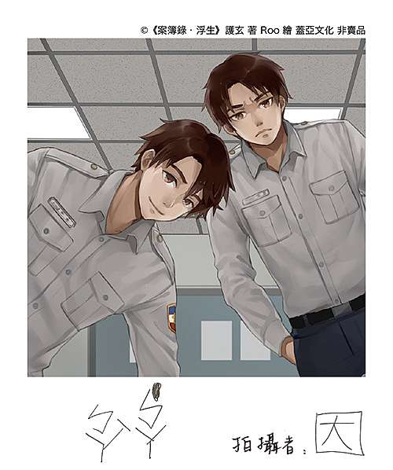

身懷陰陽眼的衝動派，從不講話的紫眼冷靜少年。因與聿兩兄弟組成的絕妙搭檔，聯手探究各種不可思議的離奇事件。奇幻靈異、驚悚推理、歡樂搞笑

虞因:本作品的男主角，褐發，就讀台中的理東大學設計系，小時候一次意外後擁有陰陽眼，偶爾能看到另一個世界的物體。
少荻聿:姓“少荻”名“聿”，黑髮紫眼，高中生，滅門慘案的倖存者。
虞佟:虞因的父親，黑色短髮，戴眼鏡，長著一張娃娃臉，警察一名。
虞夏:虞佟的雙胞胎弟弟，虞因的叔叔，黑色短髮，長著一張娃娃臉，同樣是警察一名。
嚴司:警署法醫，褐色捆辮長發，外表年輕，黎子泓的前室友。
東風:黎子泓的學弟，蓬毛長發，非常聰明，似乎有著悲慘的過去。
一太:虞因的大學同學，黑髮，單邊耳環，是大學部的現任擺平者，高深莫測，為人有分寸以及可靠。
李臨玥:與虞因相識多年的死黨好友兼大學同學，長發美女，全票當選校花。
阿柳:玖深的工作夥伴，有一個乾兒子，經常被玖深他拜託一些事情時得到一些如雙人電影票之類的回贈品。
玖深:鑑識人員，虞佟的下屬，阿柳的工作夥伴，是個很好的同事。